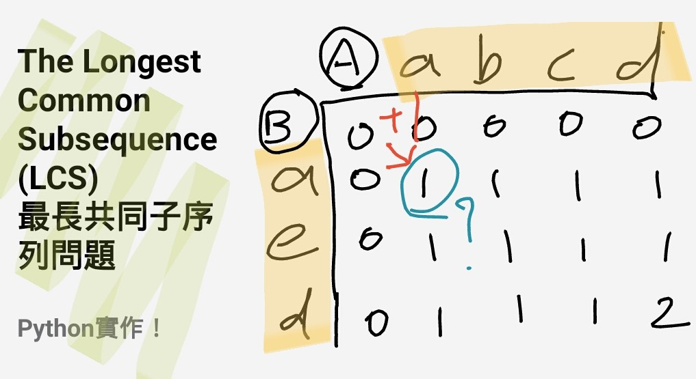
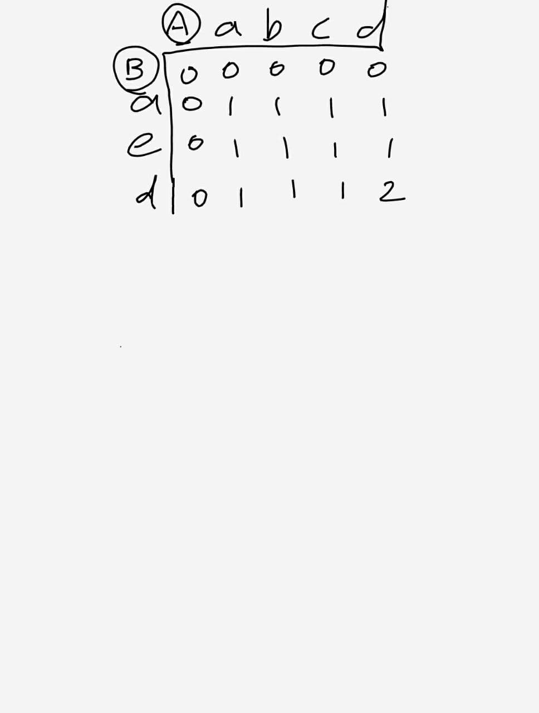
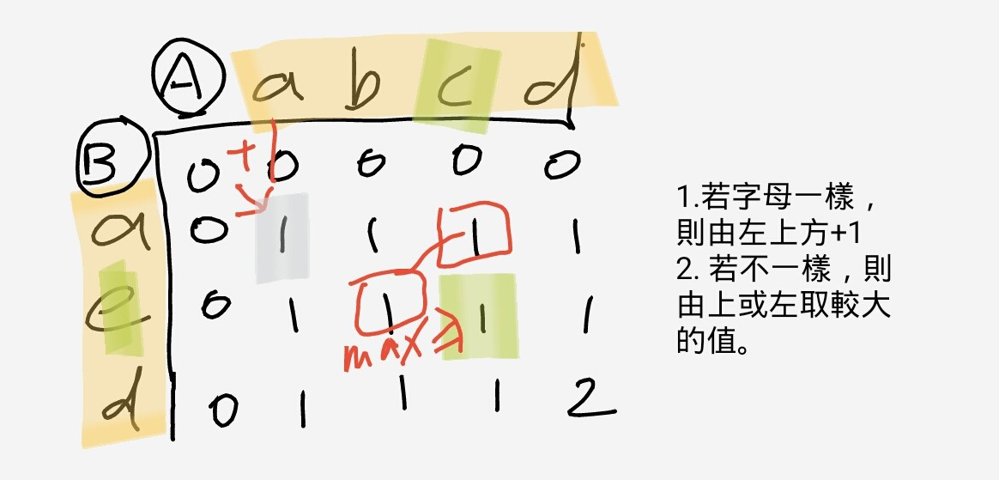
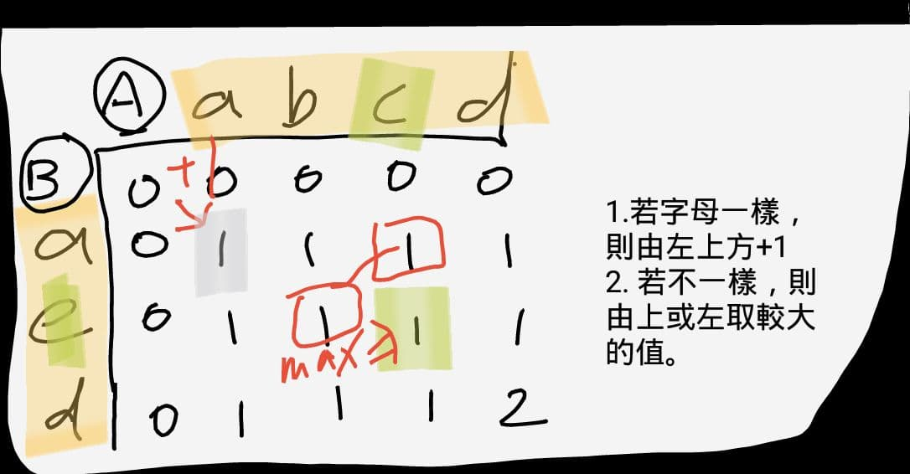
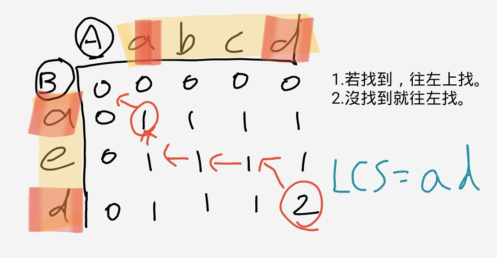

什麼是 LCS？
LCS，全名是 Longest Common Subsequence，也就是「最長共同子序列」。 給定兩個字串，我們要找出一個最長的序列，使得它同時是兩邊的 subsequence。 這裡的重點是 subsequence 不要求連續，只要求相對順序不變。
例如字串 abcd 和 abdef 的 LCS 長度是 3，
其中一個答案是 abd。而在下面的圖解中，我會先用較小的例子
A = "abcd"、B = "aed" 來說明 DP 表格的意義，
因為這樣更容易看出每一格是怎麼推導出來的。

遞迴思路
如果我們只看兩個字串的最後一個字元，其實就能把問題分成兩種情況：
- 若最後一個字元相同，答案一定可以由前一個子問題接上這個字元，所以是左上角加一。
- 若最後一個字元不同，就代表至少有一邊的最後一個字元不會出現在最佳答案裡，因此要比較「去掉 x 最後一個字元」和「去掉 y 最後一個字元」兩種情況。
def lcs(x, y, m, n):
if m == 0 or n == 0:
return 0
elif x[m - 1] == y[n - 1]:
return lcs(x, y, m - 1, n - 1) + 1
else:
return max(lcs(x, y, m, n - 1), lcs(x, y, m - 1, n))
x = 'abcd'
y = 'abdef'
print(lcs(x, y, len(x), len(y)))
這段程式的參數 m 和 n，代表我們目前正在看
x[:m] 和 y[:n] 這兩段前綴。當其中一邊長度變成 0，
就表示不可能還有共同子序列，所以直接回傳 0。
遞迴版最直觀，但它會重複計算很多子問題。也因為這樣，LCS 才會是動態規劃入門時非常經典的例子。
DP 表格怎麼填？
把字串 A 放在上方、字串 B 放在左側，我們建立一個二維表格。
表格中的 dp[i][j] 表示：
B 的前 i 個字元，和 A 的前 j 個字元，它們的 LCS 長度是多少。
第一列和第一行都先填 0，因為只要其中一邊是空字串，LCS 長度就是 0。

接著套用剛剛的兩個規則：
- 如果目前比較的兩個字元相同，這一格就是左上角的值再加 1。
- 如果不同，這一格就取上方和左方兩者的較大值。

以圖中的例子來看，當我們比較到 a 和 a 時，
因為字母相同，所以那一格是左上角 0 + 1，得到 1。
但當字母不同，例如 e 和 c，就只能從上面或左邊延續目前已知的最佳結果。

怎麼把答案找回來？
表格右下角的數字只告訴我們 LCS 的長度。如果想知道實際字串內容，就要從右下角往回走：
- 若兩個字元相同，代表這個字元屬於答案，往左上移動。
- 若不同，就往數值比較大的方向走；如果左邊和上面一樣大，通常擇一即可。

ad。
在圖解例子 A = "abcd"、B = "aed" 中，最後得到的 LCS 是
ad，長度是 2。而你上面那段遞迴程式用的
abcd 和 abdef，則會算出長度 3。
時間複雜度
單純遞迴會重複展開很多一樣的子問題，時間複雜度接近指數級。當字串稍微變長時，效能就會很差。
如果改成 DP 表格或在遞迴上加 memoization，就可以把時間複雜度降到 O(mn)，
空間複雜度也是 O(mn)。
小結
我覺得 LCS 最值得記住的不是公式本身，而是拆問題的方式：先定義「前綴和前綴」之間的關係， 再讓每一格只依賴左、上、左上這三個已經解過的子問題。掌握這個思路之後，很多 DP 題都會開始變得比較有方向感。